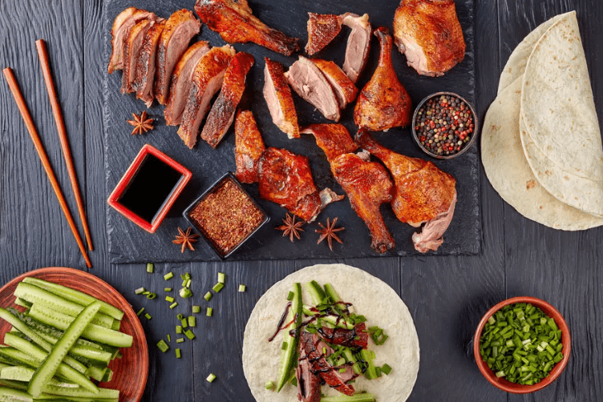

Notre restaurant
La nouveauté est notre principal moteur, nous recherchons a confectionner régulièrement de nouveaux plats qui seront satifaire vos papilles.
Canard Laqué de Pékin
Nourriture très célèbre au sein de la capitale de Pékin. Le palt se mange généralement avec des crêpes, de la sauce d'haricot sucrée et de la purée d'ail.
